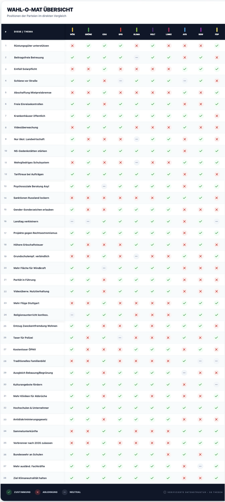
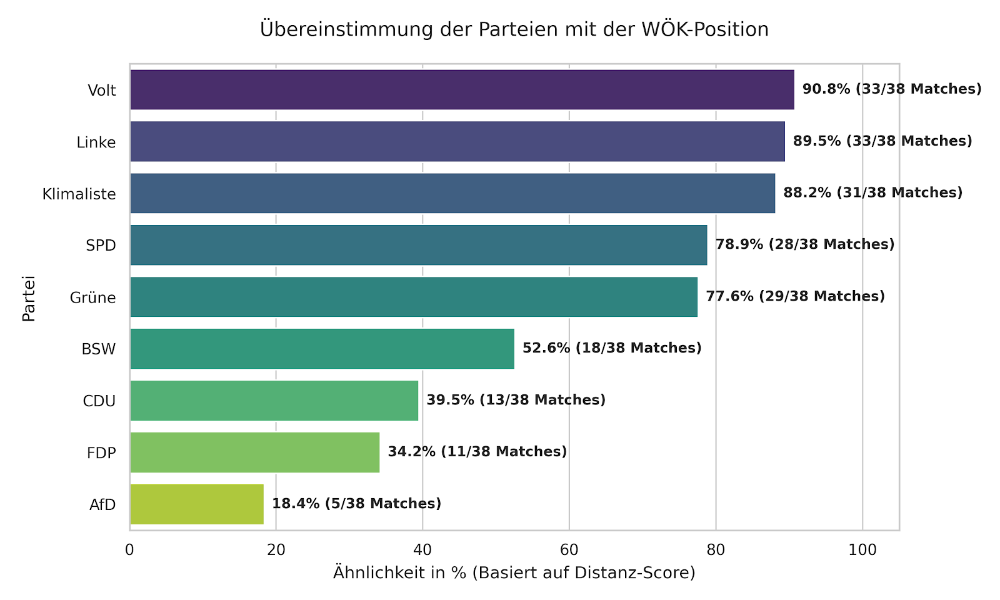
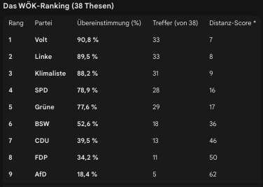
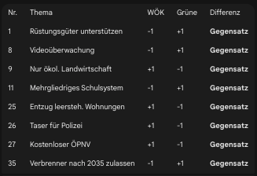
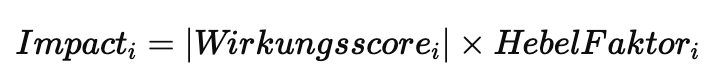
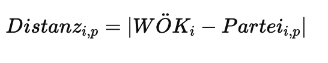
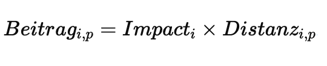
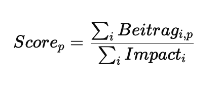
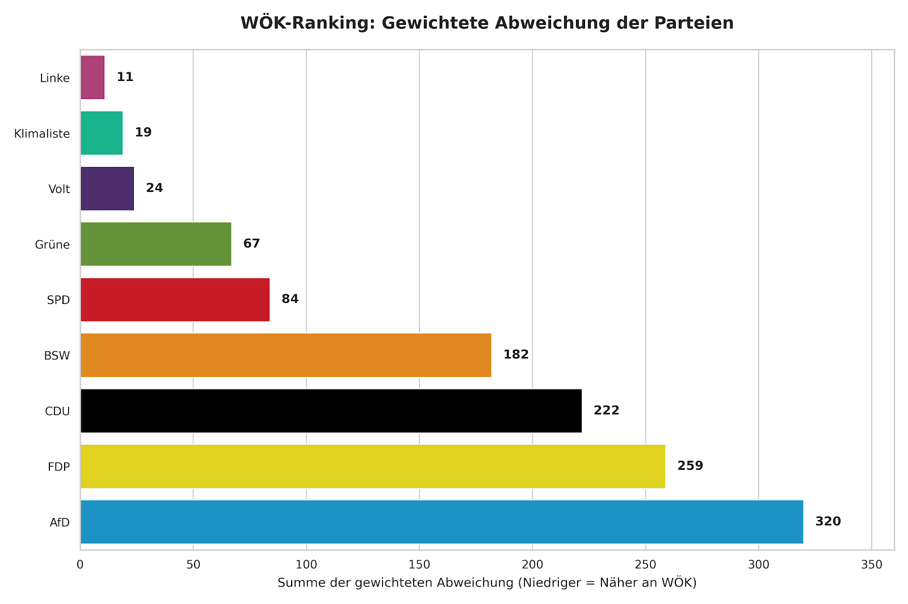
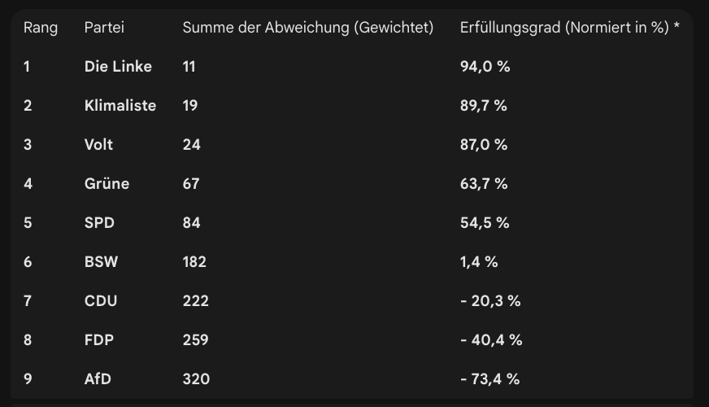

In Baden-Württemberg stehen Landtagswahlen an. Viele Bürgerinnen und Bürger nutzen zur Orientierung digitale Tools wie den Wahl-O-Mat. Diese Instrumente helfen, Positionen von Parteien mit den eigenen Haltungen abzugleichen.
Doch eine entscheidende Frage bleibt unbeantwortet:
Welche Wirkung entfalten politische Entscheidungen - jenseits von Ideologie, Parteiprogrammen oder Schlagworten?
Die Wirkungsökonomie bewertet Politik nicht danach, wer etwas fordert, sondern danach, was es im System bewirkt.
Ihr Maßstab ist die Wirkung auf:
Mensch (soziale Stabilität, Lebensqualität, Chancengerechtigkeit)
Planet (Ressourcen, Klima, Biodiversität)
Demokratie (Vertrauen, Teilhabe, Resilienz, Rechtsstaatlichkeit)
Jede These wird nach einem dreidimensionalen Wirkungsmodell (MPD) analysiert.Zusätzlich werden systemische Folgewirkungen und Externalitäten berücksichtigt.
Wichtig: Dies ist keine Wahlempfehlung, sondern eine Bewertungsmethode. Sie zeigt, welche politischen Maßnahmen systemisch stabilisieren - und welche eher kurzfristige Interessen bedienen.
Schauen wir uns daher die Fragen des WAHL-O-MAT einmal wirkungsökonomisch an.
Die Methode: MPD - Mensch, Planet, Demokratie
Jede These wurde nach drei systemischen Wirkungsdimensionen analysiert:
Wirkung auf den Menschen (soziale Stabilität, Teilhabe, Sicherheit)
Wirkung auf den Planeten (ökologische Tragfähigkeit, Transformation)
Wirkung auf die Demokratie (Rechtsstaat, Resilienz, Institutionenvertrauen)
Aus dieser Analyse wurde eine wirkungslogische Referenzposition (WÖk) definiert.
Diese Referenz ist keine Parteimeinung, sondern ein normativer Maßstab, der darauf abzielt, Wirtschaft und Politik nicht primär über Kapital oder Ideologie, sondern über Wirkung auf Mensch, Planet und Demokratie zu beurteilen.
Alle 38 Thesen wurden gleich gewichtet. Die Gleichgewichtung stellt keine inhaltliche Gleichsetzung der Themen dar, sondern dient der methodischen Vergleichbarkeit im Distanzmodell.
Methodische Trennung:
Wichtig ist die Unterscheidung zwischen Wirkungsbewertung und Positionsvergleich:
Die MPD-Analyse bewertet die systemische Wirkung einer Maßnahme auf einer Skala von -3 bis +3 (Wirkungsscore).
Für den Parteivergleich wird diese Bewertung jedoch nicht übernommen. Stattdessen wird ausschließlich geprüft, ob eine Partei der wirkungslogischen Referenzposition zustimmt, neutral bleibt oder ihr widerspricht.
Kommen wir zu der Wikungsanalyse der einzelnen 38 Fragen
1️⃣ Rüstungsgüter unterstützen?
Die Landesregierung soll Unternehmen unterstützen, die in Baden-Württemberg Rüstungsgüter herstellen.
MPD-Analyse
Mensch
Sicherheit kann Menschen schützen - Waffenproduktion erhöht globale Eskalationsdynamik
Planet - Militär ist einer der größten CO₂-Emittenten weltweit - Ressourcenintensiv
Demokratie - Rüstungsabhängigkeit verstärkt geopolitische Machtlogik - Kann autoritäre Regime indirekt stabilisieren
Systemisch
Sicherheitslogik vs. Eskalationslogik. Kurzfristige Stabilisierung, langfristige Militarisierung.
Wirkungsscore: -1 bis -2
Wirkungslogische Antwort:
Eher nicht zustimmen (Sicherheit ja - aber Unterstützung nur bei klarer defensiver, demokratiekonformer Ausrichtung)
2️⃣ Beitragsfreie Betreuung in Kitas?
Die Betreuung in Kindertageseinrichtungen soll für alle Kinder beitragsfrei sein.
MPD-Analyse
Mensch
Bildungsgerechtigkeit
Vereinbarkeit Beruf/Familie
Entlastung Alleinerziehender
Planet Neutral
Demokratie
Chancengleichheit stärkt langfristig demokratische Stabilität
Systemisch
Investition in Humankapital mit hoher Multiplikatorwirkung.
Wirkungsscore: +3
Wirkungslogische Antwort:
Zustimmen
3️⃣ Entfall der Solarpflicht?
Pflicht zur Errichtung einer Solaranlage bei vollständiger Dachsanierung soll entfallen.
MPD-Analyse
Mensch - Höhere Energiekosten langfristig
Planet - Massive Negativwirkung (CO₂)
Demokratie - Transformationsverzögerung schwächt Zukunftsvertrauen
Systemisch
Externalitäten würden wieder sozialisiert.
Wirkungsscore: -3
Wirkungslogische Antwort:
Nicht zustimmen
4️⃣ Schiene vor Straße?
Beim Ausbau der Verkehrsinfrastruktur soll die Schiene Vorrang vor der Straße haben.
MPD-Analyse
Mensch
Weniger Lärm
Weniger Unfälle
Planet
Deutlich bessere CO₂-Bilanz
Demokratie
Infrastruktur-Gerechtigkeit (auch für Nicht-Autobesitzer)
Wirkungsscore: +3
Wirkungslogische Antwort:
Zustimmen
5️⃣ Abschaffung der Mietpreisbremse?
Die Mietpreisbremse in baden-württembergischen Städten und Gemeinden soll abgeschafft werden.
MPD-Analyse
Mensch - Steigende Mieten - Soziale Spaltung
Planet Neutral
Demokratie - Vertrauensverlust bei jungen Generationen
Systemisch
Reine Kapitalrenditelogik vs. Wohnraum als Daseinsvorsorge (siehe dein Wohnungsmarkt-Paper)
Wirkungsscore: -2
Wirkungslogische Antwort:
Nicht zustimmen
6️⃣ Ende der Einreisekontrollen (Grenzen zu Frankreich & Schweiz)
Baden-Württemberg soll sich für ein Ende der Einreisekontrollen an den Grenzen zu Frankreich und der Schweiz einsetzen.
MPD-Analyse
Mensch
Freizügigkeit
Wirtschaftliche Integration - Sicherheitsbedenken bei fehlender Koordination
Planet Neutral
Demokratie
Europäische Integration stärkt multilaterale Ordnung - Wenn Vertrauen in Sicherheit sinkt → Polarisierung
Systemisch
Koordination auf EU-Ebene entscheidend. Isolation schwächt langfristig Stabilität.
Wirkungsscore: +1 bis +2
(abhängig von Sicherheitsarchitektur)
Wirkungslogische Antwort:
Eher zustimmen - mit europäischer Koordination
7️⃣ Mehr Krankenhäuser in öffentlicher Hand
Mehr Krankenhäuser in Baden-Württemberg sollen in öffentlicher Hand sein.
MPD-Analyse
Mensch
Gesundheitsversorgung als Daseinsvorsorge
Prävention vor Rendite
Planet Neutral
Demokratie
Vertrauen in Grundversorgung - Gefahr von Ineffizienz ohne Reform
Systemisch
Gesundheit ist kein normaler Markt. Profitlogik erzeugt Fehlanreize.
Wirkungsscore: +2
Wirkungslogische Antwort:
Zustimmen - kombiniert mit Qualitäts- und Effizienzsteuerung
8️⃣ Ausweitung der Videoüberwachung öffentlicher Plätze
Die Videoüberwachung öffentlicher Plätze soll ausgeweitet werden.
MPD-Analyse
Mensch
Sicherheitsgefühl - Freiheits- & Privatsphäreneinschränkung
Planet Neutral
Demokratie - Risiko von Überwachungsstaat - Vertrauensverschiebung vom Bürger zum Kontrollsystem
Systemisch
Sicherheitsgewinn meist begrenzt, demokratische Kosten potenziell hoch.
Wirkungsscore: -1
Wirkungslogische Antwort:
Eher nicht zustimmen - nur punktuell & evidenzbasiert
9️⃣ Nur noch ökologische Landwirtschaft fördern
Baden-Württemberg soll nur noch die ökologische Landwirtschaft fördern.
MPD-Analyse
Mensch
Gesundheit
regionale Wertschöpfung
Planet
Biodiversität
Bodenschutz
CO₂-Reduktion
Demokratie
Langfristige Versorgungssicherheit - Strukturwandel kann Widerstand erzeugen
Systemisch
Transformationskosten kurzfristig, Nutzen langfristig hoch.
Wirkungsscore: +3
Wirkungslogische Antwort:
Zustimmen - mit Übergangshilfen
🔟 NS-Gedenkstätten stärker finanziell unterstützen
Das Land soll Gedenkstätten, die an Verbrechen des Nationalsozialismus erinnern, stärker finanziell unterstützen.
MPD-Analyse
Mensch
Bildung
Erinnerungskultur
Planet Neutral
Demokratie
Resilienz gegen Rechtsextremismus
Historisches Bewusstsein stärkt Rechtsstaat
Systemisch
Demokratische Immunisierung gegen autoritäre Tendenzen.
Wirkungsscore: +3
Wirkungslogische Antwort:
Zustimmen
1️⃣1️⃣ Mehrgliedriges Schulsystem erhalten?
Werkrealschule/Hauptschule, Realschule, Gemeinschaftsschule, Gymnasium sollen erhalten bleiben.
MPD-Analyse
Mensch
Differenzierung kann individuelle Förderung ermöglichen - Frühe Selektion verstärkt soziale Ungleichheit - Bildungsaufstieg stark vom Elternhaus abhängig
Planet Neutral
Demokratie - Soziale Spaltung wirkt langfristig destabilisierend
Leistungsdifferenzierung kann Systemakzeptanz erhöhen
Systemisch
Das Problem ist nicht Vielfalt, sondern Durchlässigkeit. Ein starres mehrgliedriges System reproduziert Ungleichheit.
Wirkungsscore: 0 bis -1
(stark abhängig von Reformgrad und Durchlässigkeit)
Wirkungslogische Antwort:
Eher neutral - entscheidend ist soziale Durchlässigkeit
1️⃣2️⃣ Tariflöhne bei Landesaufträgen
Aufträge des Landes nur an Unternehmen mit Tariflohn.
MPD-Analyse
Mensch
Schutz vor Lohndumping
Stabilisierung der Mittelschicht
Planet Neutral
Demokratie
Vertrauen in faire Wirtschaftsordnung
Eindämmung von Prekarisierung
Systemisch
Öffentliche Mittel als Hebel für faire Marktstandards. Sehr starker Multiplikator-Effekt.
Wirkungsscore: +2
Wirkungslogische Antwort:
Zustimmen
1️⃣3️⃣ Psychosoziale Beratung für Asylsuchende
Alle Erstaufnahmeeinrichtungen des Landes sollen psychosoziale Beratung für Asylsuchende anbieten.
MPD-Analyse
Mensch
Traumabewältigung
Integrationsfähigkeit
Prävention von Radikalisierung
Planet Neutral
Demokratie
Soziale Stabilität
Reduktion gesellschaftlicher Spannungen
Systemisch
Frühzeitige Stabilisierung reduziert langfristige soziale Kosten.
Wirkungsscore: +2 bis +3
Wirkungslogische Antwort:
Zustimmen
1️⃣4️⃣ Lockerung der Sanktionen gegen Russland
Baden-Württemberg soll sich dafür einsetzen, dass die Sanktionen gegen Russland gelockert werden.
MPD-Analyse
Mensch Kurzfristig wirtschaftliche Entlastung Langfristig Stärkung eines völkerrechtswidrigen Systems
Planet Neutral
Demokratie - Schwächung internationaler Rechtsordnung - Signalwirkung an autoritäre Systeme
Systemisch
Sanktionen sind geopolitisches Steuerungsinstrument. Lockerung ohne Verhaltensänderung untergräbt Rechtsstaatlichkeit global.
Wirkungsscore: -2
Wirkungslogische Antwort:
Nicht zustimmen
1️⃣5️⃣ Gender-Sonderzeichen an Schulen erlauben
Schreibweisen, die geschlechtliche Vielfalt mit Sonderzeichen (z. B. Sternchen, Unterstrich oder Doppelpunkt) sprachlich abbilden, sollen an Schulen verwendet werden dürfen.
MPD-Analyse
Mensch
Sichtbarkeit von Vielfalt
Schutz von Minderheiten - Teilweise Ablehnung in konservativen Milieus
Planet Neutral
Demokratie
Ausdrucksfreiheit
Inklusion - Polarisierungsrisiko bei ideologischer Aufladung
Systemisch
Sprachpolitik hat eher symbolische als strukturelle Wirkung. Demokratie gewinnt durch Freiheit, nicht durch Verbote.
Wirkungsscore: +1
Wirkungslogische Antwort:
Eher zustimmen - Freiheit statt Verbot
1️⃣6️⃣ Verkleinerung des Landtags
Die Anzahl der Abgeordneten im baden-württembergischen Landtag soll verringert werden.
MPD-Analyse
Mensch Neutral - indirekte Wirkung
Planet Neutral
Demokratie
Effizienz-Argument - Gefahr geringerer Repräsentation - Schwächung kleiner Parteien - Machtkonzentration möglich
Systemisch
Demokratie lebt von Repräsentation, nicht primär von Kosteneffizienz. Zu starke Verkleinerung kann Pluralität reduzieren.
Wirkungsscore: -1 bis 0
Wirkungslogische Antwort:
Eher nicht zustimmen - außer bei klarer Reform zur Wahrung der Repräsentation
1️⃣7️⃣ Projekte gegen Rechtsextremismus weiter fördern
Das Land soll Projekte gegen Rechtsextremismus weiterhin fördern.
MPD-Analyse
Mensch
Schutz von Minderheiten
Prävention von Gewalt
Planet Neutral
Demokratie
Stärkung demokratischer Resilienz
Prävention autoritärer Dynamiken
Systemisch
Demokratie benötigt aktive Immunisierung. Extremismusprävention ist strukturelle Stabilisierung.
Wirkungsscore: +3
Wirkungslogische Antwort:
Zustimmen
1️⃣8️⃣ Steuer auf sehr hohe Erbschaften erhöhen
Baden-Württemberg soll sich dafür einsetzen, dass die Steuer auf sehr hohe Erbschaften erhöht wird.
MPD-Analyse
Mensch
Reduktion von Vermögenskonzentration
Finanzierung öffentlicher Aufgaben - Widerstand bei Betroffenen
Planet Indirekt positiv, wenn Mittel transformativ eingesetzt werden
Demokratie
Reduktion struktureller Machtasymmetrien
Chancengleichheit
Systemisch
Hohe Vermögenskonzentration destabilisiert Demokratien langfristig. Erbschaft ist leistungslos - systemisch anders zu bewerten als Arbeit.
Wirkungsscore: +2
Wirkungslogische Antwort:
Zustimmen - mit klarer Zweckbindung
1️⃣9️⃣ Grundschulempfehlung verbindlich machen
Beim Wechsel auf die weiterführende Schule soll die Empfehlung der Grundschule verbindlich sein.
MPD-Analyse
Mensch
Struktur - Weniger individuelle Entscheidungsfreiheit - Risiko sozialer Selektion
Planet Neutral
Demokratie - Soziale Mobilität kann eingeschränkt werden
Systemisch
Frühe Festlegung erhöht Pfadabhängigkeit. Demokratische Systeme profitieren von Durchlässigkeit.
Wirkungsscore: -1
Wirkungslogische Antwort:
Eher nicht zustimmen
2️⃣0️⃣ Mehr Flächen für Windkraft nutzen
Ein größerer Anteil der Fläche Baden-Württembergs soll für den Bau von Windkraftanlagen genutzt werden können.
MPD-Analyse
Mensch
Energieunabhängigkeit
langfristige Preisstabilität - lokale Widerstände
Planet
CO₂-Reduktion
Transformation des Energiesystems
Demokratie
Resilienz gegenüber geopolitischer Erpressung
Stabilisierung der Wirtschaft
Systemisch
Energie ist struktureller Hebel. Erneuerbare stärken Souveränität.
Wirkungsscore: +3
Wirkungslogische Antwort:
Zustimmen
2️⃣1️⃣ Parität in Führungspositionen
Führungspositionen in Landesbehörden sollen zu gleichen Teilen mit Frauen und Männern besetzt werden.
MPD-Analyse
Mensch
• Chancengleichheit • Repräsentation • Vorbildwirkung
Planet Neutral
Demokratie
• Abbau struktureller Diskriminierung • Legitimität staatlicher Institutionen • Pluralität der Perspektiven
Systemisch
Repräsentative Institutionen erhöhen Vertrauen und Entscheidungsqualität. Starre Quoten ohne Qualifikationsbezug können jedoch Akzeptanzprobleme erzeugen.
Wirkungsscore: +2
Wirkungslogische Antwort: Zustimmen - wenn Qualifikation und Transparenz gesichert sind
2️⃣2️⃣ Videoüberwachung in der Nutztierhaltung
In großen Betrieben soll zur Kontrolle der Nutztierhaltung Videoüberwachung angeordnet werden können.
MPD-Analyse
Mensch
• Verbraucherschutz • Vertrauen in Lebensmittelproduktion
Planet
• Tierwohl • Nachhaltigkeit landwirtschaftlicher Systeme
Demokratie
• Rechtsdurchsetzung • Transparenz staatlicher Kontrolle
Systemisch
Kontrolle erhöht Einhaltung von Standards. Entscheidend ist Datenschutz und klare Zweckbindung.
Wirkungsscore: +2
Wirkungslogische Antwort: Zustimmen - wenn Datenschutz und Verhältnismäßigkeit gewährleistet sind
2️⃣3️⃣ Mehr Flüge vom Stuttgarter Flughafen
Baden-Württemberg soll sich dafür einsetzen, dass mehr Flüge vom Stuttgarter Flughafen angeboten werden.
MPD-Analyse
Mensch
• Mobilität • Wirtschaftsanbindung
Planet
• Erhebliche CO₂-Emissionen • Lärmbelastung • Flächenverbrauch
Demokratie
• Generationengerechtigkeit • Zielkonflikt mit Klimazielen
Systemisch
Kurzfristiger Wirtschaftsimpuls steht langfristiger Transformationsstrategie entgegen.
Wirkungsscore: -2
Wirkungslogische Antwort: Ablehnen - Priorität sollte klimafreundliche Mobilität haben
2️⃣4️⃣ Konfessioneller Religionsunterricht
An baden-württembergischen Schulen soll weiterhin konfessioneller Religionsunterricht angeboten werden.
MPD-Analyse
Mensch
• Identitätsbildung • Wertevermittlung
Planet Neutral
Demokratie
• Religionsfreiheit • Pluralismus • Gefahr institutioneller Bevorzugung einzelner Glaubensrichtungen
Systemisch
Religionsfreiheit ist zu schützen. Langfristig sind überkonfessionelle Ethik-Modelle integrativer.
Wirkungsscore: 0
Wirkungslogische Antwort: Neutral - Zustimmung nur bei gleichwertigem Ethikangebot
2️⃣5️⃣ Entzug leerstehender Mietwohnungen
Länger leerstehende Mietwohnungen sollen ihren Eigentümerinnen und Eigentümern konsequent entzogen und vermietet werden.
MPD-Analyse
Mensch
• Wohnraumsicherung • soziale Gerechtigkeit
Planet
• Flächeneffizienz • Vermeidung von Neubau
Demokratie
• Eigentumsrecht vs. Gemeinwohl • soziale Stabilität
Systemisch
Wohnraummangel destabilisiert Städte. Eingriffe ins Eigentum müssen rechtssicher und verhältnismäßig sein.
Wirkungsscore: +2
Wirkungslogische Antwort: Zustimmen - wenn rechtssicher und als Ultima Ratio
2️⃣6️⃣ Elektroschockpistolen („Taser“) flächendeckend für die Polizei
Die Polizei in Baden-Württemberg soll flächendeckend mit Elektroschockpistolen ausgestattet werden.
MPD-Analyse
Mensch
Kann tödliche Schusswaffeneinsätze reduzieren - Risiko von Fehlanwendung - Gesundheitsrisiken (Herzprobleme etc.)
Planet Neutral
Demokratie
Stärkung der Einsatzfähigkeit - Gefahr von Einsatznormalisierung („niedrigere Hemmschwelle“)
Systemisch
Taser sind weniger tödlich als Schusswaffen - aber flächendeckende Ausstattung verändert Eskalationsdynamik.
Entscheidend: Ausbildung, Einsatzregeln, Transparenz.
Wirkungsscore: 0 bis +1
Wirkungslogische Antwort:
Neutral bis eher zustimmen - nur mit klarer Regulierung und Evaluationspflicht
2️⃣7️⃣ Kostenloser ÖPNV
Der öffentliche Personennahverkehr soll kostenlos sein.
MPD-Analyse
Mensch
Mobilitätsgerechtigkeit
Entlastung Haushalte
soziale Teilhabe
Planet
Verlagerung vom Auto auf ÖPNV
CO₂-Reduktion
Demokratie
Gleichberechtigte Teilhabe - Finanzierungsfrage kann Konflikte erzeugen
Systemisch
Wirkung stark positiv, wenn:
Angebot ausreichend ausgebaut ist
Finanzierung nachhaltig geregelt ist
Kostenlos ohne Kapazitätsausbau → Überlastung.
Wirkungsscore: +2 bis +3
Wirkungslogische Antwort:
Zustimmen - gekoppelt an Ausbau und solide Finanzierung
2️⃣8️⃣ Vorrang des traditionellen Familienbildes
An Schulen soll vorrangig das traditionelle Familienbild (Mutter, Vater, Kinder) vermittelt werden.
MPD-Analyse
Mensch - Ausschluss anderer Familienformen - Diskriminierungsrisiko
Orientierung für konservative Milieus
Planet Neutral
Demokratie - Einschränkung von Vielfalt - Normierung statt Pluralität
Systemisch
Demokratie lebt von Anerkennung unterschiedlicher Lebensmodelle. „Vorrang“ bedeutet Hierarchisierung.
Wirkungsscore: -2
Wirkungslogische Antwort:
Nicht zustimmen
(Pluralität vermitteln, nicht ein Modell privilegieren.)
2️⃣9️⃣ Bebauung & Begrünung - Ausgleichspflicht
Für jede neu bebaute Fläche soll eine gleich große Fläche begrünt werden müssen.
MPD-Analyse
Mensch
Lebensqualität
Hitzeschutz
Planet
Flächenausgleich
Biodiversität
CO₂-Bindung
Demokratie
Generationengerechtigkeit - Umsetzung kann Bürokratie erhöhen
Systemisch
Flächenverbrauch ist einer der größten planetaren Hebel. Ausgleichspflicht internalisiert Externalitäten.
Wirkungsscore: +3
Wirkungslogische Antwort:
Zustimmen
3️⃣0️⃣ Stärkere Förderung kommunaler Kulturangebote
Kommunale Kulturangebote sollen stärker finanziell gefördert werden.
MPD-Analyse
Mensch
Soziale Kohäsion
Bildung & Identität
Integration
Planet Neutral
Demokratie
Dialogräume
Demokratieförderung
Prävention von Radikalisierung
Systemisch
Kultur ist „soziale Infrastruktur“. Häufig unterschätzter Stabilitätsfaktor.
Wirkungsscore: +2
Wirkungslogische Antwort:
Zustimmen
3️⃣1️⃣ Mehr Kliniken für Schwangerschaftsabbrüche
Baden-Württemberg soll sicherstellen, dass mehr Kliniken Schwangerschaftsabbrüche anbieten.
MPD-Analyse
Mensch
Selbstbestimmung
Gesundheitsversorgung
Schutz vor illegalen / unsicheren Eingriffen
Planet Neutral
Demokratie
Grundrechte
Gleichstellung
Schutz individueller Freiheit
Systemisch
Versorgungslücken führen zu sozialer Ungleichheit. Zugang ist Teil funktionierender Gesundheitsinfrastruktur.
Wirkungsscore: +2
Wirkungslogische Antwort: Zustimmen
3️⃣2️⃣ Hochschulen und private Unternehmen
Die Hochschulen des Landes sollen stärker mit privaten Unternehmen zusammenarbeiten.
MPD-Analyse
Mensch
Beschäftigungsfähigkeit
Innovationszugang
Wissenstransfer
Planet
Transformationsbeschleunigung möglich
Demokratie
Transparenz entscheidend
Vermeidung von Abhängigkeiten
Systemisch
Kooperation erhöht Innovationskraft - aber nur bei klaren Governance-Regeln.
Wirkungsscore: +1
Wirkungslogische Antwort: Zustimmen - wenn akademische Unabhängigkeit gesichert ist
3️⃣3️⃣ Schutz vor Diskriminierung stärken
Der Schutz vor Diskriminierung durch Landesbehörden soll durch ein Gesetz gestärkt werden.
MPD-Analyse
Mensch
Gleichbehandlung
Schutz von Minderheiten
Vertrauen in Institutionen
Planet Neutral
Demokratie
Rechtsstaatlichkeit
Minderheitenschutz
Verfassungstreue
Systemisch
Institutionelle Diskriminierung destabilisiert Vertrauen. Rechtsklarheit stärkt Systemresilienz.
Wirkungsscore: +2
Wirkungslogische Antwort: Zustimmen
3️⃣4️⃣ Sammelunterkünfte für Asylbewerbende
Asylbewerberinnen und -bewerber sollen bis zur Entscheidung ausschließlich in Sammelunterkünften untergebracht werden.
MPD-Analyse
Mensch
Integration erschwert
Isolation
psychische Belastung
Planet Neutral
Demokratie
Gleichbehandlungsfrage
Menschenwürde
Systemisch
Langfristige Sammelunterbringung erhöht Integrationskosten. Dezentrale Lösungen wirken stabilisierender.
Wirkungsscore: -1
Wirkungslogische Antwort: Nicht zustimmen
3️⃣5️⃣ Verbrennungsmotoren nach 2035 zulassen
Baden-Württemberg soll sich dafür einsetzen, dass auch nach 2035 neue Pkw mit fossilem Verbrennungsmotor zugelassen werden dürfen.
MPD-Analyse
Mensch
kurzfristige Industriesicherung
langfristige Klimarisiken
Planet
Emissionsanstieg
Transformationsverzögerung
Demokratie
Generationengerechtigkeit
Systemisch
Technologierückschritt schwächt Innovationsstandort. Transformationsverweigerung erhöht spätere Anpassungskosten.
Wirkungsscore: -2
Wirkungslogische Antwort: Nicht zustimmen
3️⃣6️⃣ Bundeswehr an Schulen
Die Bundeswehr soll weiterhin Veranstaltungen an Schulen durchführen dürfen.
MPD-Analyse
Mensch
Informationszugang
Berufsorientierung
Planet Neutral
Demokratie
Transparenz staatlicher Institutionen
politische Neutralität entscheidend
Systemisch
Problematisch nur bei einseitiger Werbung. Information ≠ Militarisierung.
Wirkungsscore: +1
Wirkungslogische Antwort: Zustimmen - bei politischer Ausgewogenheit
3️⃣7️⃣ Ausländische Fachkräfte
Das Land soll verstärkt ausländische Fachkräfte anwerben.
MPD-Analyse
Mensch
Sicherung Sozialsysteme
Fachkräftemangel beheben
Integration erforderlich
Planet
neutral
Demokratie
gesellschaftliche Offenheit
Stabilität des Arbeitsmarkts
Systemisch
Demografischer Wandel macht Zuwanderung strukturell notwendig.
Wirkungsscore: +2
Wirkungslogische Antwort: Zustimmen
3️⃣8️⃣ Klimaneutralität beibehalten
Baden-Württemberg soll am Ziel der Klimaneutralität festhalten.
MPD-Analyse
Mensch
Gesundheit
langfristige Lebensqualität
Planet
Emissionsreduktion
Biodiversitätsschutz
Demokratie
Generationengerechtigkeit
internationale Verpflichtungen
Systemisch
Klimaneutralität ist kein Moralprojekt, sondern wirtschaftliche Zukunftsstrategie.
Wirkungsscore: +2
Wirkungslogische Antwort: Zustimmen
Schauen wir uns jetzt einmal die Antworten der Parteien zu den Einzelfragen an (die wirkungsökonomischen (WÖk) Antworten gelten als Referenz).

Wirkungsökonomisches Fazit
Die Analyse zeigt: Ein hohes Maß an Wirkungsökonomie findet sich dort, wo soziale Sicherheit und ökologische Notwendigkeit nicht als Gegensätze, sondern als gegenseitige Voraussetzungen begriffen werden. Das Spitzenfeld aus Volt, Linke und Klimaliste zeigt die höchste Resilienz gegenüber kurzfristigem Populismus. Interessant ist das Abschneiden der Volksparteien: Während die SPD durch moderate Abweichungen eine solide Grundnähe behält, führen bei den Grünen spezifische Differenzen bei sicherheits- und industriepolitischen Strukturfragen zu einer größeren Distanz zur wirkungsökonomischen Referenz, als man auf den ersten Blick vermuten würde.
Die Referenzposition ist eine normative Ableitung aus der MPD-Analyse. Andere normative Priorisierungen könnten zu abweichenden Referenzwerten führen.
📊 Rangfolge nach Wirkungsnähe


* Distanz-Score: Je niedriger, desto näher ist die Partei an der WÖK. Ein Treffer zählt 0, eine neutrale Abweichung 1 und eine völlig gegensätzliche Meinung (+1 vs. -1) zählt 2.
Analyse der Datenvisualisierung:
Die X-Achse (Ähnlichkeit in %): Repräsentiert nicht nur Sympathie, sondern die mathematische Nähe zum MPD-Referenzrahmen.
Farblogik: Die Verwendung der Parteifarben macht sofort deutlich, dass die "ökologisch-sozialen" Kräfte die höchste Korrelation zur Systemstabilität aufweisen.
Der 'Distanz-Effekt': Achten Sie auf den Abstand zwischen (Grüne) und (BSW). Hier verläuft die Grenze zwischen dem pro-systemischen Lager und Parteien, die zentrale Wirkungsprinzipien unserer aktuellen Gesellschaftsordnung grundlegend infrage stellen.
Wirkungsökonomisches Fazit: Systemische Resilienz vs. Parteiprogrammatik
Die vorliegende Analyse der 38 Wahl-O-Mat-Thesen nach dem MPD-Modell (Mensch, Planet, Demokratie) liefert ein klares Bild darüber, welche politischen Angebote die höchste systemische Stabilität versprechen.
1. Die "Wirkungs-Champions": Volt, Linke und Klimaliste
Dass diese Parteien das Ranking anführen (alle über 88 % Übereinstimmung), liegt an ihrer konsequenten Ausrichtung auf den Erhalt kollektiver Lebensgrundlagen. In der Wirkungsökonomie bewerten wir Entscheidungen nach ihrer langfristigen Resilienz. Diese Parteien zeigen die geringste Neigung, kurzfristige Partikularinteressen über die Stabilität der Systeme (Klima, Soziales, Rechtsstaat) zu stellen.
2. Das "Grüne Paradoxon": Warum ?
Ein zentrales Ergebnis ist die Positionierung der Grünen. Trotz hoher inhaltlicher Schnittmengen im Bereich "Planet", führen harte Gegensätze in der Sicherheits- und Wirtschaftspolitik (z. B. Videoüberwachung, Rüstungsgüter, Verbrenner-Technologie) zu einer hohen Punktedistanz.
Wirkungsökonomische Deutung: Während die Grünen häufig als "Systemveränderer" wahrgenommen werden, weichen sie in der Realpolitik der untersuchten Thesen signifikant von einer rein wirkungsorientierten Referenz ab, wenn staatliche Sicherheits- oder Industriestandards berührt sind.

3. Die Erosion der Mitte
Die Ergebnisse für CDU (39,5 %) und FDP (34,2 %) sind aus wirkungsökonomischer Sicht besorgniserregend. Wenn etablierte Volksparteien in über 60 % der Fälle Positionen einnehmen, die den Erhalt von Sozial- und Natursystemen gefährden oder demokratische Teilhabe einschränken, entsteht ein "Impact-Vakuum". Wirtschaftskompetenz wird hier häufig noch ohne die Einpreisung von Externalitäten (Folgekosten durch Klimaschäden oder soziale Instabilität) definiert.
4. Die Gefahr der Destabilisierung
Das Schlusslicht AfD (18,4 %) verdeutlicht, dass populistische Programmatik fast durchgehend im Widerspruch zur systemischen Stabilität steht. Aus Sicht der Wirkungsökonomie würde die Umsetzung dieser Positionen zu massiven Kostensteigerungen in allen drei Bereichen (M, P und D) führen.
Einordnung
Die Rangfolge basiert nicht auf politischer Präferenz, sondern auf einer systematischen Distanzmessung.
Auffällig ist:
Parteien mit konsistenter ökologischer Transformationsstrategie und demokratischer Resilienz liegen nahe an der wirkungsökonomischen Referenz.
Größere Abweichungen entstehen dort, wo zentrale Transformations- oder Demokratiefragen relativiert werden.
Interessant ist auch die Abweichung zu den Grünen. Daher habe ich diese Abweichung hier noch einmal explizit dargestellt.
Zweite Berechnung - Gewichtung nach struktureller Wirkung
Wirkungsökonomisches Fazit: Strukturhebel statt Zählmechanik
Die soeben durchgeführte gleichgewichtete Analyse misst formale Positionsnähe. Sie behandelt jede der 38 Thesen identisch - unabhängig davon, ob es sich um ein symbolisches Einzelthema oder einen strukturellen Transformationshebel handelt. Also einfach Ja/Enthaltung/Nein. Jede Entscheidung hat jedoch eine unterschiedliche Wirkung. Aus wirkungsökonomischer Perspektive ist das folglich nur die erste Ebene, denn politische Entscheidungen unterscheiden sich fundamental in ihrer strukturellen Tragweite.
Eine Abweichung bei der Solarpflicht oder beim Ziel der Klimaneutralität wirkt systemisch anders als eine Abweichung bei der Verwendung von Gender-Sonderzeichen oder beim Religionsunterricht.
Deshalb wurde im Folgenden die Analyse um eine zweite Berechnung ergänzt.
Methodischer Schritt: Von Distanz zu strukturellem Impact
Für jede These wurde ein strukturelles Wirkungsgewicht berechnet:

Wirkungsscore: Bewertung nach MPD (Mensch, Planet, Demokratie)
HebelFaktor: 3 (hoch), 2 (mittel), 1 (gering)
Beispiel:
Solarpflicht
Score -3
Hebel 3
Impact = 9
Religionsunterricht
Score 0
Hebel 1
Impact = 0
Die strukturelle Relevanz unterscheidet sich damit um ein Vielfaches.
Berechnung der gewichteten Parteidistanz
Die Abweichung einer Partei ergibt sich aus:

0 = Übereinstimmung
1 = neutrale Abweichung
2 = gegensätzliche Position
Die wirkungsgewichtete Abweichung lautet:

Der normierte Gesamtwert:

Gemessen wird also nicht: „Wie häufig weicht eine Partei ab?“
sondern:
„Wie stark wirken ihre Abweichungen bei strukturellen Zukunftsfragen?“

Die X-Achse zeigt die Summe der gewichteten Abweichungen. Je kürzer der Balken, desto näher liegt die Partei bei strukturell relevanten Fragen an der wirkungsökonomischen Referenz.
Die Grafik misst keine Moral. Sie misst strukturelle Kongruenz.
1. Die Gruppe mit minimaler struktureller Abweichung
Linke, Klimaliste und Volt weisen sehr geringe Summenwerte auf.
Das bedeutet rechnerisch:
Bei Hochimpact-Themen - insbesondere Energie, Klimastrategie, soziale Infrastruktur und Demokratieschutz - stimmen ihre Positionen weitgehend mit der MPD-Referenz überein.
Abweichungen betreffen überwiegend Themen mit geringerer struktureller Hebelwirkung.
2. Das mittlere Feld: Grüne und SPD
Die Grünen und die SPD liegen deutlich näher an der Referenz als das untere Feld, weisen jedoch eine messbare strukturelle Abweichung auf.
Diese entsteht nicht durch Symbolfragen, sondern durch Differenzen bei einzelnen Hochimpact-Fragen.
Die gewichtete Analyse zeigt: Übereinstimmung bei Transformationszielen allein reicht nicht aus, wenn gleichzeitig strukturelle Sozial- oder Eigentumsfragen anders bewertet werden.
Die Distanz entsteht also durch Hebelwirkung - nicht durch Detailpolitik.
3. Deutliche strukturelle Abweichungen im unteren Feld
Ab steigen die gewichteten Abweichungen deutlich an.
Hier kumulieren sich Gegensätze bei strukturellen Hebeln:
Energie- und Klimapolitik
soziale Ausgleichsinstrumente
demokratische Schutzmechanismen
Je höher der Impact einer Frage, desto stärker schlägt eine gegensätzliche Position rechnerisch durch.
Die Spreizung entsteht somit nicht durch einzelne Streitpunkte, sondern durch systemische Grundannahmen.
BSW
Die hohen Abweichungswerte entstehen insbesondere durch Differenzen bei Energie-, Sicherheits- und geopolitischen Strukturfragen. Soziale Programmatik wird in der MPD-Referenz stärker mit langfristiger Transformations- und Demokratiesicherung verknüpft als im Parteiprogramm.
CDU
Die Abweichungen betreffen vor allem klima- und energiepolitische Strukturhebel sowie regulatorische Fragen sozialer Umverteilung. Markt- und ordnungspolitische Prioritäten führen hier zu systemischer Distanz bei Hochimpact-Themen.
FDP
Die größten Abweichungen entstehen bei Transformations- und Verteilungsfragen. Die starke Betonung marktwirtschaftlicher Instrumente ohne strukturelle Externalitätseinpreisung wirkt sich im MPD-Modell deutlich aus.
AfD
Hier kumulieren Gegensätze insbesondere bei Klima-, Migrations- und Demokratieschutzfragen. Die Distanz ergibt sich weniger aus Einzelfragen als aus grundlegend unterschiedlichen Systemannahmen.
Einordnung der normierten Werte

Der normierte Wert zeigt, wie groß die gewichtete Abweichung im Verhältnis zur maximal möglichen Systemwirkung ist. Ein Wert über 100 % bedeutet, dass die gewichtete Abweichung die durchschnittliche strukturelle Systemwirkung der Referenzposition deutlich übersteigt.
Ein hoher Wert bedeutet: Die Abweichungen betreffen überwiegend Fragen mit hoher struktureller Tragweite. Das ist keine moralische Bewertung, sondern eine Aussage über Systemorientierung.
Meta-Erkenntnis
Die Unterschiede verlaufen weniger entlang klassischer Links-Rechts-Kategorien.
Sie verlaufen entlang einer Systemachse: Transformationsorientierung vs. Status-quo-Orientierung bei strukturellen Hebeln. Die gewichtete Analyse macht diese Achse sichtbar.
Methodischer Schluss
Die zweite Berechnung gewichtet strukturelle Systemhebel stärker als symbolische Einzelthemen. Das Ranking wird dadurch nicht politischer - sondern systemischer.
Die Wahl bleibt normativ. Die Wirkung ist messbar.